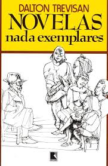

Novelas Nada Exemplares

Sobre a obra
“Um moço em Curitiba só tem um remédio: afogar-se. Como não há mar, um tonel de rum serve. Mas nem todos encontram coragem ou lucidez para o tonel de rum. Há então o noivado, ser noivo de alguma coisa ou pessoa, evitar a garoa das noites, encontrar uma sala com sofá e o retrato de um parente morto suspenso na parede, tomar o café que lhe traz a futura sogra, e, aos domingos, há o ajantarado pegajoso da província a noiva bordará, costurará, fará qualquer coisa com as mãos, talvez uma carícia. As mulheres estarão sempre costurando, solteiras, casadas, viúvas, velhas ou moças terão os dedos picadi-nhos de agulha, até que um dia o ovo de costura rolará de suas mãos e a cabeça tombará para sempre — não, nada é para sempre, ainda com o ovo de costura caído no chão o pescoço é alvo útil para a navalhada.
Há tempos, quando da estréia de Dalton Trevisan em livro, justamente este Novelas ndda exemplares, Otto Maria Carpeaux cometeu, a meu ver, um excesso de rigor crítico. Impressionado por aquilo que chamou de ""provocação"" (o título inspirado ou contra-inspirado em Cervantes), mestre Carpeaux fez restrições ao livro. Mas o próprio fato de Otto Maria Carpeaux despencar em cima do estreante todo o peso de seu laboratório crítico já revelava alguma coisa Pois em Dalton Trevisan nascia o grande contista nacional que hoje todos admiramos. Mesmo naquela crítica feroz, Carpeaux reconhecia em Trevisan o ""observador atento dos por-menores da realidade"". E apontava que ""talvez a sua verdadeira vocação seja a de cronista do quotidiano"".
Não é lugar, aqui, para entrarmos na conceitua-çáo dos gêneros. Novela, conto, crônica — tonela-das de volumes foram escritas delimitando as porções de cada gênero, e outras tantas toneladas serão escritas ainda sobre o assunto. Chega-se a um resultado ou a nenhum resultado, mas o que impor-ta é saber se o autor de determinada novela, conto ou crônica tem ou não a garra, a fome do escritor.
Dalton tem essa fome — fome jamais saciada ao longo destes anos em que, da remota província, continuou bombardeando amigos e admiradores com suas plaquetas de conto que — afinal — receberam a nobre forma de livro. E tenho para mim que Dalton Trevisan, ao lado deste econômico e ecumênico. José J. Veiga, de Os cavalinhos de platiplanto, constitui o que de melhor temos em matéria de conto.
Novelas nada exemplares são, se não estou enganado, suas primeiras experiências no gênero que o tornaria famoso e respeitado. Alguns de seus melhores momentos estão aqui, neste livro — e permito-me citar ""A velha querida"" e ""João Nicolau"" como duas de suas obras-primas. São duas experiências quase antagônicas. Na primeira, é o episódio incisivo, denso de notações e sentidos, uma aventura que dura o espaço de uma visita ao bordel. Na segunda, é toda uma existência percorrida aos saltos, a história de um homem quase que do berço ao túmulo. Em ambas, a mesma firmeza do autor em eliminar os ângulos mortos da narrativa e a mesma justeza em escolher o alvo e o ângulo exatos.
Evidente, cada leitor encontrará aqui o seu trabalho preferido. E cada crítico terá o direito de acusar no autor curitibano a monocórdica obsessão pela província: pelos temas, pelos dramas, pela falta de humor da província. Carpeaux cita, para justificar ou explicar a temática de Dalton Trevisan, alguns autores modernos cuja companhia honraria qual-quer escritor: Sartre, Camilo José Cela, Morávia. Na realidade, Trevisan situa-se adequadamente na linha nauseada da literatura, aquela linha que não usa a literatura para salvar ou para acusar o homem, apenas para aproximá-lo das nossas retinas, mos-trá-lo a nós mesmos e, através de diferentes planos, através de diversos retratos, constatarmos que somos iguais a ele, que somos nós mesmos esses eternos noivos de província, esses ébrios e desespe-rados das noites de garoa, esses estupradores envi-nhados das beiras de estrada.
A fidelidade de Dalton Trevisan a seu mundo teve uma conseqüência absurdamente lógica: a fidelidade ao gênero que escolheu para nos comu-nicar este mundo. Exemplo, se náo único, pelo menos raro em qualquer literatura. Isso me dá von-tade de citar Tchekov e Maupassant. Mas não sou crítico. Como simples leitor, cumpre-me expressar o respeito e a admiração pela obra do contista para-naense, certo de que a sua presença em nossas letras marca um dos momentos mais puros e belos de nossa época literária.
- Carlos Heitor Cony”
Dados da edição
- Editora
- Record
- ISBN
- 978-850-101-542-6
- Páginas
- 224
- Lançamento da edição
- 01/11/1979
Fonte
As informações foram copiadas e coladas do site da editora: Editora Record.